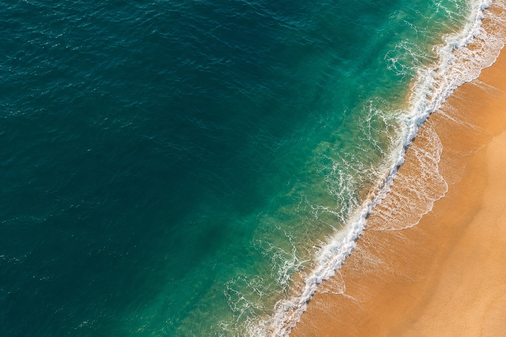

Dados simulados
Recém-registrada
João Pessoa, PB
Registre resíduos nas praias de Tambaú e Cabo Branco e consulte os trechos que precisam de atenção no próximo mutirão.

Sobre o projeto
A meta 14.1 trata da prevenção e redução da poluição marinha. Ao registrar onde o lixo se acumula na orla, a comunidade ajuda a escolher quais trechos precisam de atenção.
Conheça o ODS 14 na ONU BrasilInforme onde encontrou o resíduo e de que tipo ele é.
Consulte os relatos e encontre trechos que precisam de atenção.